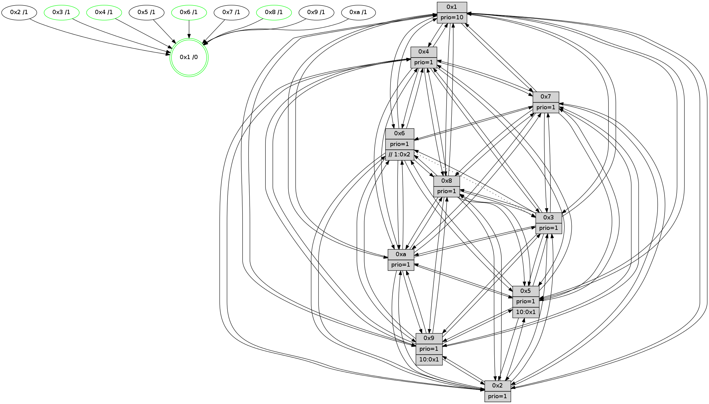

>> << IDX [start] -100 -25 -5 +0 +5 +25 [1565.65670609]
 Previous packets
----------------------------------------------------------------------
1560.139789 beacon01(faad) #0 coord=01,02,03,04,05,06,07,0a,09,08 cycle=688.0ms assoc
-- color-indic=1 64 b7 e4
1560.149771 beacon02(faad) #0 coord=01,02,03,04,05,06,07,0a,09,08 cycle=688.0ms assoc 64 24 d5
1560.159771 beacon03(faad) #0 coord=01,02,03,04,05,06,07,0a,09,08 cycle=688.0ms assoc 64 5e 98
1560.169771 beacon04(faad) #0 coord=01,02,03,04,05,06,07,0a,09,08 cycle=688.0ms assoc 64 29 72
1560.179771 beacon05(faad) #0 coord=01,02,03,04,05,06,07,0a,09,08 cycle=688.0ms assoc 64 53 3f
1560.189771 beacon06(faad) #0 coord=01,02,03,04,05,06,07,0a,09,08 cycle=688.0ms assoc 64 dd e8
1560.199773 beacon07(faad) #0 coord=01,02,03,04,05,06,07,0a,09,08 cycle=688.0ms assoc 64 a7 a5
1560.209779 beacon0a(faad) #0 coord=01,02,03,04,05,06,07,0a,09,08 cycle=688.0ms assoc 64 d6 ae
1560.229776 beacon08(faad) #0 coord=01,02,03,04,05,06,07,0a,09,08 cycle=688.0ms assoc 64 22 34
1560.241634 [Hello(4): seq=994 sym=5,8,6,2,3,9,7,10,1 sysInfo=hasWarning stat=5:5,14,11,4/8:7,5,1,0/6:10,10,7,4/2:14,9,13,3/3:4,1,5,1/9:15,8,13,4/7:8,1,2,0/10:0,14,6,15/1:6,7,15,1]
1560.244282 [Hello(10): seq=927 sym=6,2,3,8,7,5,9,4,1 sysInfo=hasWarning stat=6:6,8,12,7/2:0,9,14,2/3:6,3,5,15/8:6,1,2,7/7:14,5,15,10/5:6,13,6,3/9:9,5,1,1/4:14,13,11,4/1:0,5,15,1]
1560.246793 [Color(1) seq=674 @0:0 prio=10]
1560.250177 [Hello(7): seq=994 sym=2,3,5,6,8,4,9,10,1 sysInfo=hasWarning stat=2:4,3,10,6/3:7,15,15,6/5:8,13,13,5/6:15,14,11,15/8:2,7,4,2/4:7,12,3,1/9:12,8,5,4/10:9,5,4,9/1:5,15,12,0]
1560.255744 [Hello(9): seq=938 sym=2,5,3,4,7,6,8,10,1 sysInfo=hasWarning stat=2:1,5,15,13/5:4,9,7,0/3:15,14,12,7/4:10,13,8,4/7:0,0,0,0/6:15,9,14,3/8:11,6,7,10/10:10,11,9,0/1:15,13,15,1]
1560.259638 [Hello(8): seq=938 sym=5,2,3,7,9,6,4,10,1 sysInfo=hasWarning stat=5:8,1,8,3/2:0,0,3,14/3:4,3,8,6/7:9,3,2,0/9:9,0,9,7/6:15,3,5,3/4:4,10,14,3/10:15,13,15,5/1:13,0,1,0]
----------------------------------------------------------------------
1560.927919 beacon01(faad) #0 coord=01,02,03,04,05,06,07,0a,09,08 cycle=688.0ms assoc
-- color-indic=1 64 73 ea
1560.937902 beacon02(faad) #0 coord=01,02,03,04,05,06,07,0a,09,08 cycle=688.0ms assoc 64 e0 db
1560.947900 beacon03(faad) #0 coord=01,02,03,04,05,06,07,0a,09,08 cycle=688.0ms assoc 64 9a 96
1560.957901 beacon04(faad) #0 coord=01,02,03,04,05,06,07,0a,09,08 cycle=688.0ms assoc 64 ed 7c
1560.967902 beacon05(faad) #0 coord=01,02,03,04,05,06,07,0a,09,08 cycle=688.0ms assoc 64 97 31
1560.977902 beacon06(faad) #0 coord=01,02,03,04,05,06,07,0a,09,08 cycle=688.0ms assoc 64 19 e6
1560.987902 beacon07(faad) #0 coord=01,02,03,04,05,06,07,0a,09,08 cycle=688.0ms assoc 64 63 ab
1560.997907 beacon0a(faad) #0 coord=01,02,03,04,05,06,07,0a,09,08 cycle=688.0ms assoc 64 12 a0
1561.007908 beacon09(faad) #0 coord=01,02,03,04,05,06,07,0a,09,08 cycle=688.0ms assoc 64 9c 77
1561.017909 beacon08(faad) #0 coord=01,02,03,04,05,06,07,0a,09,08 cycle=688.0ms assoc 64 e6 3a
1561.029072 [Hello(5): seq=995 sym=7,6,4,2,1,9,8,10,3 sysInfo=hasWarning stat=7:6,6,2,1/6:6,7,2,2/4:0,15,6,1/2:5,6,1,0/1:10,13,9,0/9:11,7,13,13/8:9,6,7,9/10:3,1,1,11/3:6,9,1,0]
1561.033263 [Color(4) seq=522 @0:0 prio=1]
1561.034566 [Hello(1): seq=904 sym=4,2,9,5,10,3,8,6,7 sysInfo=coloring-mode-on,ColoringModeRequestCalled stat=4:1,6,12,5/2:7,2,4,7/9:9,8,6,4/5:1,10,13,11/10:6,13,0,9/3:2,5,14,13/8:13,4,6,8/6:11,15,9,5/7:4,3,15,3]
1561.037160 [Hello(2): seq=991 sym=4,5,7,6,3,9,8,10,1 sysInfo=hasWarning stat=4:10,6,10,15/5:2,0,12,4/7:13,6,1,3/6:0,1,0,0/3:6,7,2,0/9:5,14,6,11/8:5,3,8,1/10:5,13,6,13/1:5,12,9,0]
1561.040572 [Color(8) seq=582 @0:0 prio=1]
1561.042484 [Hello(3): seq=995 sym=1,7,6,2,4,8,9,10,5 sysInfo=hasWarning stat=1:14,13,3,0/7:12,3,1,0/6:1,2,0,0/2:5,8,1,0/4:11,10,2,15/8:1,4,10,10/9:5,7,10,2/10:8,10,0,6/5:5,15,8,3]
1561.045353 [Hello(6): seq=995 sym=5,4,7,9,8,10,1 asym=3,2 sysInfo=hasWarning stat=5:10,13,1,6/4:7,1,10,10/7:9,7,11,1/9:11,14,14,12/8:11,15,5,11/10:0,11,7,15/1:15,15,0,1/3:15,9,12,0/2:2,13,5,1]
1561.048309 [Color(3) seq=624 @0:0 prio=1]
1561.054132 [Color(6) seq=627 @0:0 prio=1 >>1.@2,1.@3,1.@4]
----------------------------------------------------------------------
1561.716050 beacon01(faad) #0 coord=01,02,03,04,05,06,07,0a,09,08 cycle=688.0ms assoc
-- color-indic=1 64 cf ef
1561.726032 beacon02(faad) #0 coord=01,02,03,04,05,06,07,0a,09,08 cycle=688.0ms assoc 64 5c de
1561.736033 beacon03(faad) #0 coord=01,02,03,04,05,06,07,0a,09,08 cycle=688.0ms assoc 64 26 93
1561.746034 beacon04(faad) #0 coord=01,02,03,04,05,06,07,0a,09,08 cycle=688.0ms assoc 64 51 79
1561.756033 beacon05(faad) #0 coord=01,02,03,04,05,06,07,0a,09,08 cycle=688.0ms assoc 64 2b 34
1561.766034 beacon06(faad) #0 coord=01,02,03,04,05,06,07,0a,09,08 cycle=688.0ms assoc 64 a5 e3
1561.776034 beacon07(faad) #0 coord=01,02,03,04,05,06,07,0a,09,08 cycle=688.0ms assoc 64 df ae
1561.786038 beacon0a(faad) #0 coord=01,02,03,04,05,06,07,0a,09,08 cycle=688.0ms assoc 64 ae a5
1561.806038 beacon08(faad) #0 coord=01,02,03,04,05,06,07,0a,09,08 cycle=688.0ms assoc 64 5a 3f
1561.821017 [STC(1) #0.281 tree-change,inconsistent-stability,stable,to-color d=0]
1561.822203 [Hello(4): seq=995 sym=5,8,6,2,3,9,7,10,1 sysInfo=hasWarning stat=5:6,14,11,4/8:8,6,1,0/6:11,11,7,4/2:15,9,13,3/3:5,2,5,1/9:0,8,13,4/7:9,1,2,0/10:1,14,6,15/1:7,8,15,1]
1561.826833 [Color(1) seq=675 @0:0 prio=10]
1561.831226 [Hello(10): seq=928 sym=6,2,3,8,7,5,9,4,1 sysInfo=hasWarning stat=6:7,9,12,7/2:1,9,14,2/3:7,4,5,15/8:7,2,2,7/7:15,5,15,10/5:7,13,6,3/9:10,5,1,1/4:14,14,11,4/1:1,6,15,1]
1561.834248 [Hello(7): seq=995 sym=2,3,5,6,8,4,9,10,1 sysInfo=hasWarning stat=2:5,3,10,6/3:8,0,15,6/5:9,13,13,5/6:0,15,11,15/8:3,8,4,2/4:7,13,3,1/9:13,8,5,4/10:9,5,4,9/1:6,15,12,0]
----------------------------------------------------------------------
1562.504182 beacon01(faad) #0 coord=01,02,03,04,05,06,07,0a,09,08 cycle=688.0ms assoc
-- color-indic=1 64 db 81
1562.514164 beacon02(faad) #0 coord=01,02,03,04,05,06,07,0a,09,08 cycle=688.0ms assoc 64 48 b0
1562.524164 beacon03(faad) #0 coord=01,02,03,04,05,06,07,0a,09,08 cycle=688.0ms assoc 64 32 fd
1562.534166 beacon04(faad) #0 coord=01,02,03,04,05,06,07,0a,09,08 cycle=688.0ms assoc 64 45 17
1562.544165 beacon05(faad) #0 coord=01,02,03,04,05,06,07,0a,09,08 cycle=688.0ms assoc 64 3f 5a
1562.554164 beacon06(faad) #0 coord=01,02,03,04,05,06,07,0a,09,08 cycle=688.0ms assoc 64 b1 8d
1562.564164 beacon07(faad) #0 coord=01,02,03,04,05,06,07,0a,09,08 cycle=688.0ms assoc 64 cb c0
1562.574170 beacon0a(faad) #0 coord=01,02,03,04,05,06,07,0a,09,08 cycle=688.0ms assoc 64 ba cb
1562.594172 beacon08(faad) #0 coord=01,02,03,04,05,06,07,0a,09,08 cycle=688.0ms assoc 64 4e 51
1562.605564 [Hello(5): seq=996 sym=7,6,4,2,1,9,8,10,3 sysInfo=hasWarning stat=7:7,6,2,1/6:7,8,2,2/4:1,0,6,1/2:6,6,1,0/1:11,14,10,0/9:12,7,13,13/8:9,7,7,9/10:4,1,1,11/3:7,10,1,0]
1562.609236 [Hello(2): seq=992 sym=4,5,7,6,3,9,8,10,1 sysInfo=hasWarning stat=4:11,6,10,15/5:2,0,12,4/7:14,6,1,3/6:1,2,0,0/3:7,8,2,0/9:6,14,6,11/8:5,4,8,1/10:6,13,6,13/1:5,13,10,0]
1562.613216 [Color(4) seq=523 @0:0 prio=1]
1562.616978 [STC(2)->1 #0.281 tree-change,inconsistent-stability,to-color d=1]
1562.618496 [Hello(6): seq=996 sym=5,4,7,9,8,10,1 asym=3,2 sysInfo=hasWarning stat=5:11,13,1,6/4:8,1,10,10/7:10,7,11,1/9:11,14,14,12/8:12,15,5,11/10:1,11,7,15/1:15,0,1,1/3:15,9,12,0/2:2,13,5,1]
1562.622433 [STC(5)->1 #0.281 tree-change,inconsistent-stability,to-color d=1]
1562.623737 [STC(9)->1 #0.281 tree-change,inconsistent-stability,to-color d=1]
1562.626010 [STC(6)->1 #0.281 tree-change,inconsistent-stability,stable,to-color d=1]
1562.628552 [Hello(3): seq=996 sym=1,7,6,2,4,8,9,10,5 sysInfo=hasWarning stat=1:14,14,4,0/7:13,3,1,0/6:1,3,0,0/2:5,8,1,0/4:12,10,2,15/8:2,4,10,10/9:5,7,10,2/10:9,10,0,6/5:6,15,8,3]
1562.631925 [Color(6) seq=628 @0:0 prio=1 >>1.@2,1.@3,1.@4]
1562.636301 [STC(3)->1 #0.281 tree-change,inconsistent-stability,stable,to-color d=1]
1562.638820 [Color(8) seq=583 @0:0 prio=1]
1562.640162 [Color(3) seq=625 @0:0 prio=1]
----------------------------------------------------------------------
1563.292313 beacon01(faad) #0 coord=01,02,03,04,05,06,07,0a,09,08 cycle=688.0ms assoc
-- color-indic=1 64 67 84
1563.302295 beacon02(faad) #0 coord=01,02,03,04,05,06,07,0a,09,08 cycle=688.0ms assoc 64 f4 b5
1563.312296 beacon03(faad) #0 coord=01,02,03,04,05,06,07,0a,09,08 cycle=688.0ms assoc 64 8e f8
1563.322296 beacon04(faad) #0 coord=01,02,03,04,05,06,07,0a,09,08 cycle=688.0ms assoc 64 f9 12
1563.332298 beacon05(faad) #0 coord=01,02,03,04,05,06,07,0a,09,08 cycle=688.0ms assoc 64 83 5f
1563.342297 beacon06(faad) #0 coord=01,02,03,04,05,06,07,0a,09,08 cycle=688.0ms assoc 64 0d 88
1563.352296 beacon07(faad) #0 coord=01,02,03,04,05,06,07,0a,09,08 cycle=688.0ms assoc 64 77 c5
1563.362300 beacon0a(faad) #0 coord=01,02,03,04,05,06,07,0a,09,08 cycle=688.0ms assoc 64 06 ce
1563.382301 beacon08(faad) #0 coord=01,02,03,04,05,06,07,0a,09,08 cycle=688.0ms assoc 64 f2 54
1563.394112 [Hello(10): seq=929 sym=6,2,3,8,7,5,9,4,1 sysInfo=hasWarning stat=6:8,10,13,7/2:2,9,15,2/3:8,5,6,15/8:7,3,2,7/7:0,5,15,10/5:8,13,7,3/9:10,5,2,1/4:14,14,11,4/1:2,6,15,1]
1563.398257 [Color(1) seq=676 @0:0 prio=10]
1563.399558 [Hello(4): seq=996 sym=5,8,6,2,3,9,7,10,1 sysInfo=hasWarning stat=5:7,14,12,4/8:8,7,1,0/6:12,12,8,4/2:15,9,14,3/3:6,3,6,1/9:0,8,14,4/7:10,1,2,0/10:2,14,6,15/1:7,9,15,1]
1563.402821 [Hello(9): seq=940 sym=2,5,3,4,7,6,8,10,1 sysInfo=hasWarning stat=2:2,5,15,13/5:5,9,7,0/3:1,0,13,7/4:11,14,8,4/7:1,0,0,0/6:0,11,14,3/8:12,8,8,10/10:11,11,9,0/1:0,14,0,1]
1563.406582 [Hello(8): seq=940 sym=5,2,3,7,9,6,4,10,1 sysInfo=hasWarning stat=5:10,1,8,3/2:0,0,3,14/3:5,5,8,6/7:10,3,2,0/9:9,0,9,7/6:0,4,5,3/4:5,10,14,3/10:0,13,15,5/1:13,1,2,0]
----------------------------------------------------------------------
1564.080445 beacon01(faad) #0 coord=01,02,03,04,05,06,07,0a,09,08 cycle=688.0ms assoc
-- color-indic=1 64 a3 8a
1564.090428 beacon02(faad) #0 coord=01,02,03,04,05,06,07,0a,09,08 cycle=688.0ms assoc 64 30 bb
1564.100427 beacon03(faad) #0 coord=01,02,03,04,05,06,07,0a,09,08 cycle=688.0ms assoc 64 4a f6
1564.110427 beacon04(faad) #0 coord=01,02,03,04,05,06,07,0a,09,08 cycle=688.0ms assoc 64 3d 1c
1564.120427 beacon05(faad) #0 coord=01,02,03,04,05,06,07,0a,09,08 cycle=688.0ms assoc 64 47 51
1564.130426 beacon06(faad) #0 coord=01,02,03,04,05,06,07,0a,09,08 cycle=688.0ms assoc 64 c9 86
1564.140430 beacon07(faad) #0 coord=01,02,03,04,05,06,07,0a,09,08 cycle=688.0ms assoc 64 b3 cb
1564.150432 beacon0a(faad) #0 coord=01,02,03,04,05,06,07,0a,09,08 cycle=688.0ms assoc 64 c2 c0
1564.170432 beacon08(faad) #0 coord=01,02,03,04,05,06,07,0a,09,08 cycle=688.0ms assoc 64 36 5a
1564.181696 [Hello(1): seq=906 sym=4,2,9,5,10,3,8,6,7 sysInfo=coloring-mode-on,ColoringModeRequestCalled stat=4:3,6,12,5/2:8,2,5,7/9:11,8,7,4/5:1,10,14,11/10:8,13,0,9/3:4,7,15,13/8:14,6,6,8/6:13,1,10,5/7:5,3,15,3]
1564.188016 [Hello(3): seq=997 sym=1,7,6,2,4,8,9,10,5 sysInfo=hasWarning stat=1:14,15,4,0/7:13,3,1,0/6:1,3,0,0/2:6,8,1,0/4:13,10,2,15/8:3,4,10,10/9:6,7,10,2/10:10,10,0,6/5:7,15,8,3]
1564.190790 [Hello(6): seq=997 sym=2,5,4,7,9,8,10,1 asym=3 sysInfo=hasWarning stat=2:3,13,5,1/5:12,13,1,6/4:9,1,10,10/7:11,7,11,1/9:12,14,14,12/8:13,0,5,11/10:1,11,7,15/1:15,1,1,1/3:15,10,13,0]
1564.194629 [Color(6) seq=629 @0:0 prio=1 >>1.@2,1.@3,1.@4]
1564.197183 [Hello(5): seq=997 sym=7,6,4,2,1,9,8,10,3 sysInfo=hasWarning stat=7:7,6,2,1/6:7,9,2,2/4:2,0,6,1/2:6,6,1,0/1:11,15,10,0/9:13,7,14,13/8:10,8,8,9/10:5,1,1,11/3:8,11,2,0]
1564.200695 [Hello(2): seq=993 sym=4,5,7,6,3,9,8,10,1 sysInfo=hasWarning stat=4:12,6,10,15/5:2,0,13,4/7:15,6,1,3/6:2,3,1,0/3:8,9,3,0/9:7,14,7,11/8:6,5,8,1/10:6,13,6,13/1:5,14,10,0]
1564.203917 [Color(3) seq=626 @0:0 prio=1]
----------------------------------------------------------------------
1564.868575 beacon01(faad) #0 coord=01,02,03,04,05,06,07,0a,09,08 cycle=688.0ms assoc
-- color-indic=1 64 1f 8f
1564.878557 beacon02(faad) #0 coord=01,02,03,04,05,06,07,0a,09,08 cycle=688.0ms assoc 64 8c be
1564.888558 beacon03(faad) #0 coord=01,02,03,04,05,06,07,0a,09,08 cycle=688.0ms assoc 64 f6 f3
1564.898558 beacon04(faad) #0 coord=01,02,03,04,05,06,07,0a,09,08 cycle=688.0ms assoc 64 81 19
1564.908559 beacon05(faad) #0 coord=01,02,03,04,05,06,07,0a,09,08 cycle=688.0ms assoc 64 fb 54
1564.918557 beacon06(faad) #0 coord=01,02,03,04,05,06,07,0a,09,08 cycle=688.0ms assoc 64 75 83
1564.928560 beacon07(faad) #0 coord=01,02,03,04,05,06,07,0a,09,08 cycle=688.0ms assoc 64 0f ce
1564.938564 beacon0a(faad) #0 coord=01,02,03,04,05,06,07,0a,09,08 cycle=688.0ms assoc 64 7e c5
1564.958564 beacon08(faad) #0 coord=01,02,03,04,05,06,07,0a,09,08 cycle=688.0ms assoc 64 8a 5f
1564.970090 [Hello(8): seq=941 sym=5,2,3,7,9,6,4,10,1 sysInfo=hasWarning stat=5:11,1,8,3/2:1,0,3,14/3:6,6,8,6/7:10,3,2,0/9:9,0,9,7/6:1,5,5,3/4:5,10,14,3/10:0,13,15,5/1:14,1,2,0]
1564.974025 [Hello(10): seq=930 sym=6,2,3,8,7,5,9,4,1 sysInfo=hasWarning stat=6:9,11,13,7/2:3,9,15,2/3:9,6,6,15/8:8,3,2,7/7:0,5,15,10/5:9,13,7,3/9:11,5,2,1/4:15,15,11,4/1:3,7,15,1]
1564.978494 [Color(1) seq=677 @0:0 prio=10]
1564.979981 [Hello(4): seq=997 sym=5,8,6,2,3,9,7,10,1 sysInfo=hasWarning stat=5:8,14,12,4/8:9,7,1,0/6:13,13,8,4/2:0,9,14,3/3:7,4,6,1/9:1,8,14,4/7:10,1,2,0/10:2,14,6,15/1:8,9,15,1]
1564.985497 [Hello(7): seq=997 sym=2,3,5,6,8,4,9,10,1 sysInfo=hasWarning stat=2:7,3,11,6/3:10,2,0,6/5:11,13,14,5/6:2,1,12,15/8:4,10,4,2/4:8,13,3,1/9:14,8,6,4/10:9,5,4,9/1:8,0,12,0]
1564.989946 [Hello(9): seq=941 sym=2,5,3,4,7,6,8,10,1 sysInfo=hasWarning stat=2:3,5,15,13/5:6,9,7,0/3:2,1,13,7/4:11,15,8,4/7:1,0,0,0/6:1,12,14,3/8:13,8,8,10/10:11,11,9,0/1:1,14,0,1]